Day 1 · 最佳：上午光线
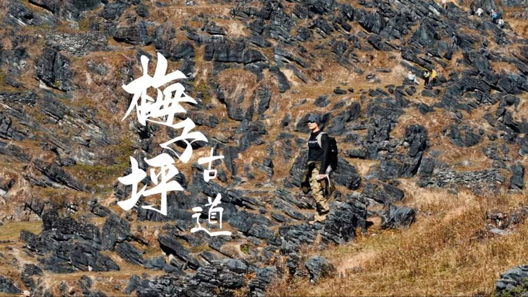
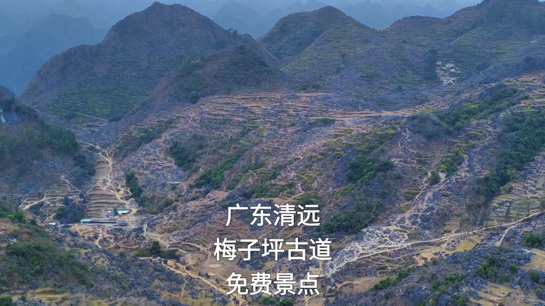
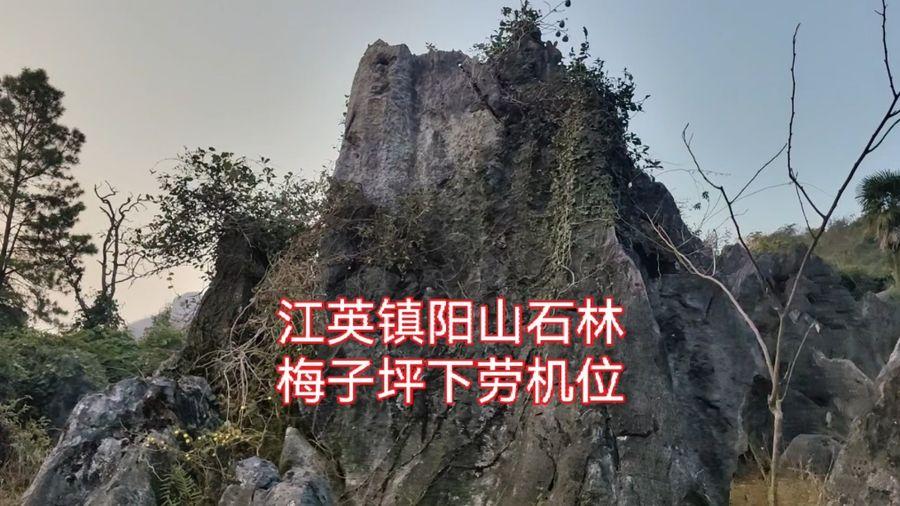
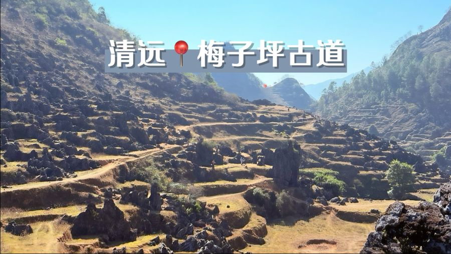
三重视图看行程：串联图看「怎么走」，示意图看「方位」，真实地图看「路况」。点击任一站点可联动定位到景点卡片。
示意图基于真实经纬度按比例映射 · 东右西左 · 北上南下 · 里程均为 OSRM 实测
点击标记可联动查看景点卡片 · 线路颜色：橙=Day1 / 绿=Day2 · 红虚线=徒步轨迹（示意） · 若底图加载失败会自动切换
当前网络无法加载地图瓦片（本页其余内容与全部图片仍可离线查看）→ 请切换到「行程示意图」查看路线。
点击卡片标题可展开时间轴；顶栏「Day 切换」可快速定位对应一天。
| 06:30 | 深圳出发，加满油，早餐干粮车上解决 |
|---|---|
| 10:45 | 抵达梅子坪古道起点（导航「阳山县江英镇上坪村党群服务中心」，免费停车；登山口更近可导「周屋农庄」） |
| 11:00 | 开始徒步 8km 精华小环线 · 爬升约300m · 约3.5–4.5h |
| 12:00 | 古道午餐：黑石林旁野餐（自带）或梅子坪村/邓公村小卖部豆腐花绿豆沙（带现金） |
| 13:00 | 精华段打卡：黑石林核心区 / 青石板马蹄印古道 / 梯田古村 / 牛羊群 / 秋日黄叶 |
| 15:00 | 收整下山（山区天黑快，务必 15:30 前返回车旁） |
| 15:30 | 车程转场九龙镇（61km · 约1h，县道多弯慢行） |
| 16:30 | 入住九龙镇经济客栈 · 休整 |
| 17:30 | 晚餐：九龙豆腐农家菜（见美食） |
| 可选 | 日落前可顺路打卡千军峰林 / 荣强小桂林（九龙镇西南约2km，免费） |
| 08:30 | 退房出发 → 黄花镇（9km · 30min），导航「黄花公园」（小赵州桥） |
|---|---|
| 09:00 | 英西峰林精华徒步开始：约10km，机耕路+乡道，基本无爬升，3.5–5h |
| 09:15 | 小赵州桥（永丰古桥）：无桥墩古石拱桥 · 蔓藤古意 · 经典机位 |
| 09:30 | 永丰古庙 → 骆驼峰 / 攀岩场 → 茶园 · 乡间小路 |
| 10:30 | 和顺岩：天然穿山岩洞 · 溪流穿洞 · 拍剪影绝佳 |
| 11:30 | 观音谷：群峰环抱 · 奇石「童子拜观音」 · 草坪午餐休整 |
| 12:30 | 返程：观音谷口三轮摩托回黄花公园（约5元/人）或原路折返 |
| 13:30 | 九龙镇午餐（农家菜） |
| 15:00 | 九龙镇直返深圳（262km · 约4h） |
| 19:00 | 抵达深圳 · 顺利到家 |
两条徒步线的分段路书 + 海拔剖面 + 轨迹下载提示。出行前务必在「两步路」App 下载对应离线轨迹。
📶 轨迹：两步路搜「清远梅子坪古道」提前下载离线轨迹 · 全程约90%无信号 · 务必带现金
☀️ 全程基本无遮荫：防晒帽+墨镜+防晒霜、1.5L水/人 · 观音谷返程可坐三轮车
两大徒步地 + 顺路打卡点。点击图片可全屏浏览，点击下方筛选可分类过滤。
📷 配图主要来自 B站实拍视频封面（对应景点真实画面，每张注明 UP主）+ 少量 Pexels 美食示意图；版权归原作者，仅作行程参考




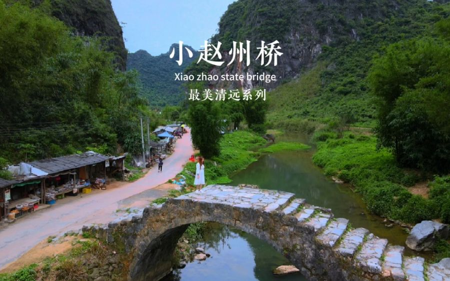
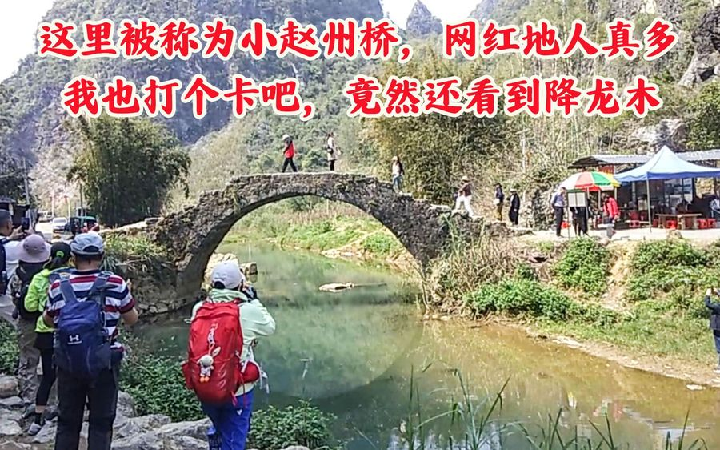
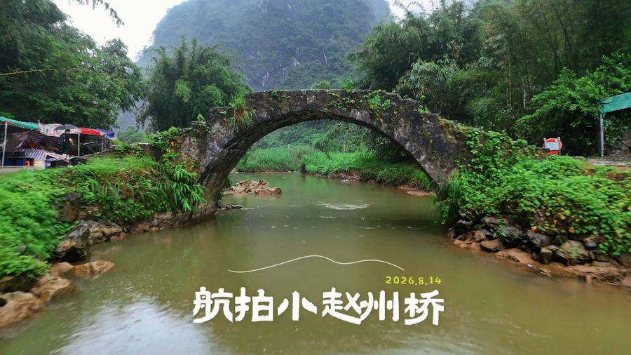
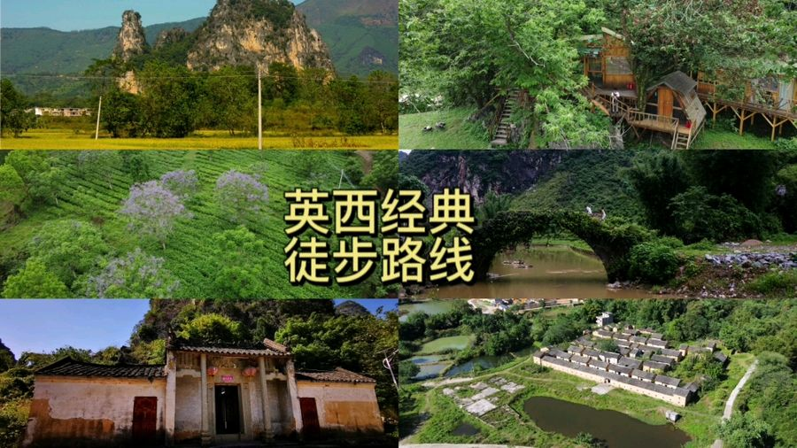
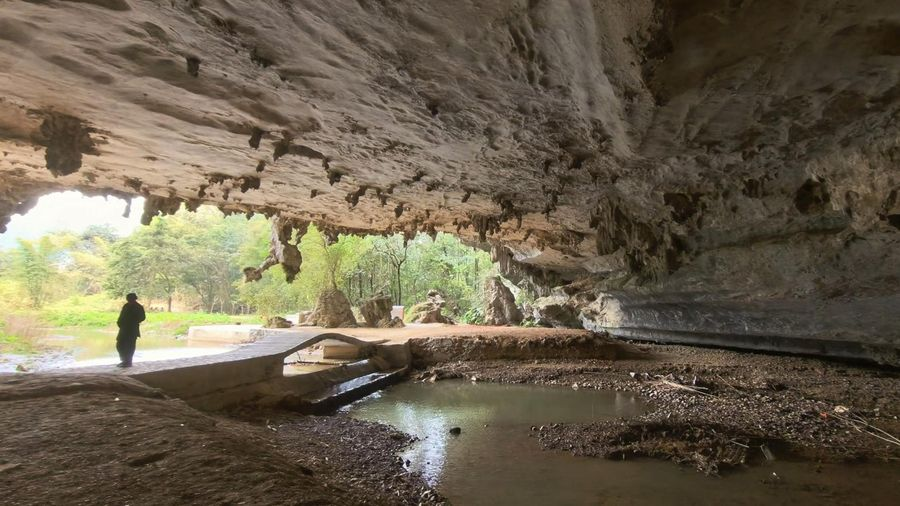
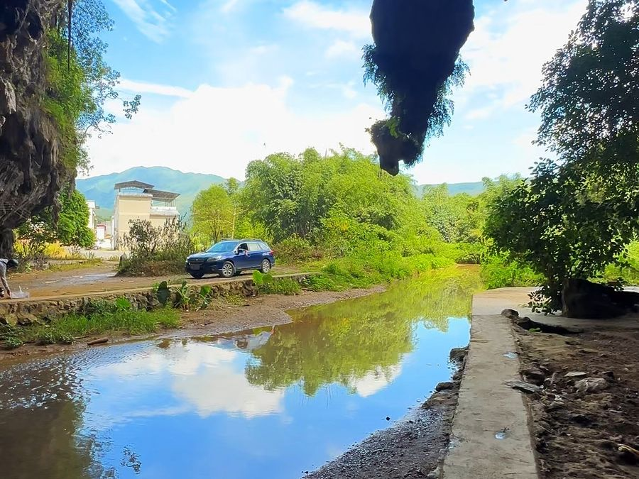
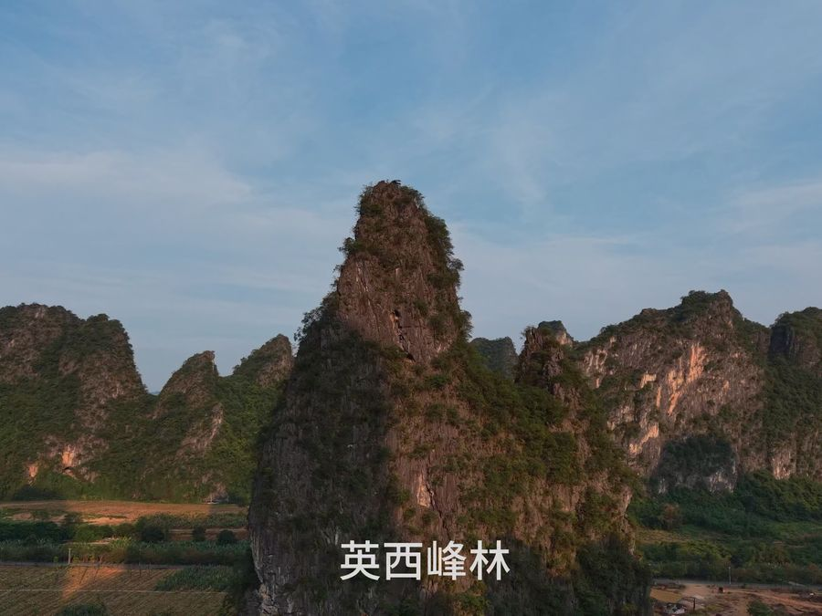
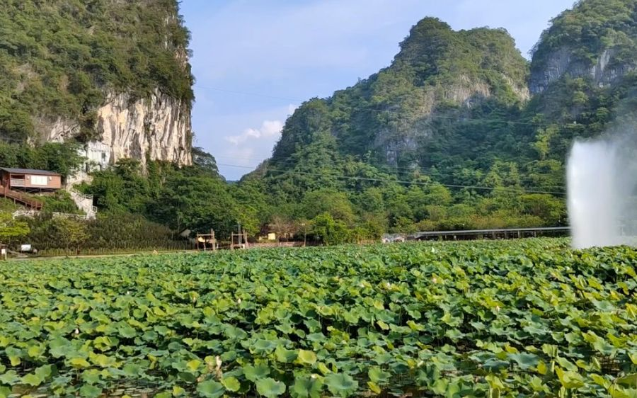
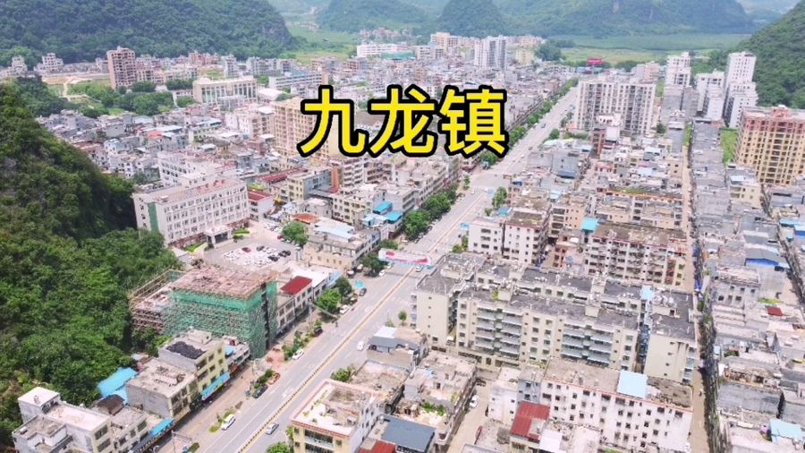
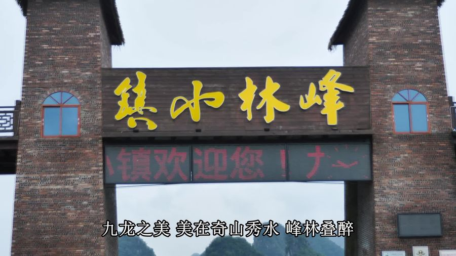


九龙豆腐水嫩清甜是必尝招牌；清远鸡白切/柴火焖煮肉质紧实；山坑螺、河煎小鱼仔下饭；腐竹可作手信。
📷 图片：Pexels（农家菜 / 美食示意图，版权归原作者）
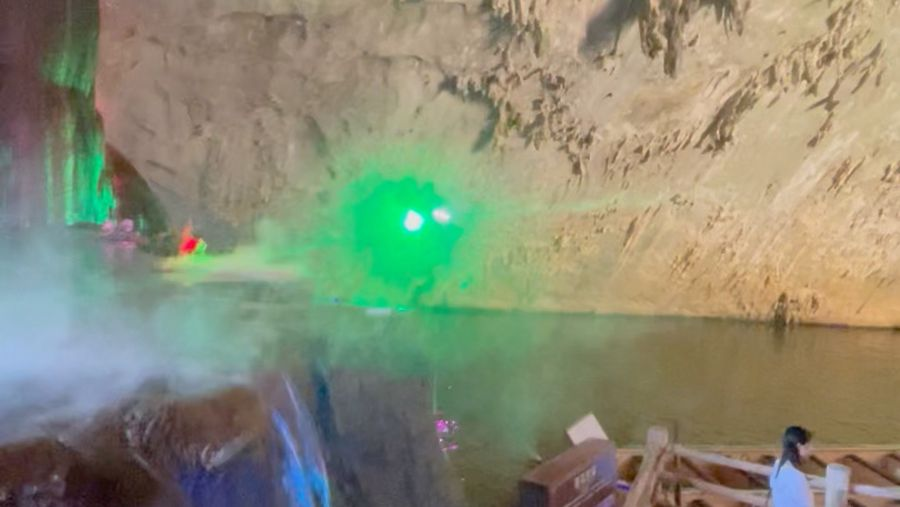
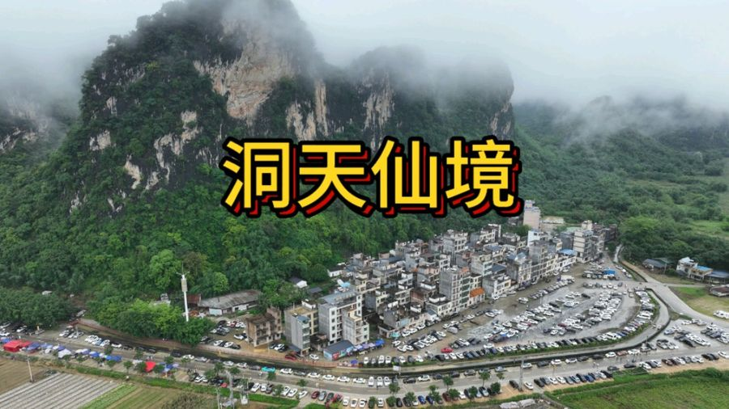
经济实惠为主，住九龙镇（餐饮方便、离徒步起点黄花镇仅30分钟）。
备选：黄花镇民宿（离徒步起点更近，但餐饮与选择少）。11月中为徒步旺季，建议提前1周在携程/美团预订并电话确认。
徒步之余，尝遍粤北农家味道。
点击类别可勾选/取消，实时重算合计与人均（5人 · 1车 · 3间房基准）。
* 门票 0 元：两条徒步线均免费。省钱版：住宿改2间(-150)、正餐简化为自带干粮+2顿农家菜(-150)，可压到人均≈300元。
装备、天气、安全一个都不能少。
11月中旬15–25℃，昼夜温差大。出发前查「阳山」「英德」预报；有雨则梅子坪石板路湿滑，改期或改走英西峰林。带轻便雨衣。
广深/京港澳→广清高速→清连高速→阳山段；进村最后一段窄路会车慢行；梅子坪→九龙为县道多弯；18:00后山区天黑快。
防滑徒步鞋（青石板湿滑）、登山杖、护膝、防晒帽+墨镜+防晒霜、驱蚊液、1.5–2L水/人、头灯、薄外套、充电宝。
梅子坪90%路段无信号：提前在「两步路」下载「清远梅子坪古道」离线轨迹；下载离线地图；山中补给只收现金。
无痕山野垃圾带走；不攀爬石林；不采野果；结伴不落单；秋冬草木干燥禁止野外生火；不踩踏千年古道石板。
报警110 / 急救120；行程告知家人；迷路原地等待保电量；梅子坪起点上坪村党群服务中心可求助；建议购买户外运动险。